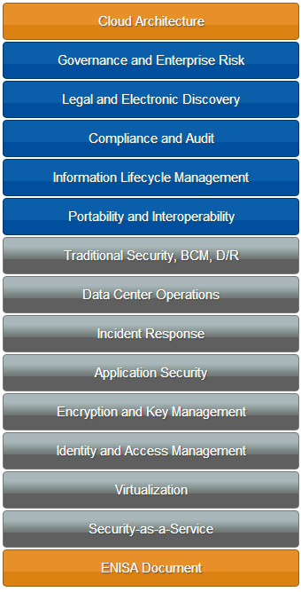

De Cloud Security Alliance (CSA) is een internationale non-profitorganisatie gericht op betere cloud computing security. De CSA heeft een catalogus van best practices samengesteld die breed is geadopteerd, de “Security Guidance for Critical Areas of Focus in Cloud Computing, V3.0“. Daarnaast heeft de European Network and Information Security Agency (ENISA) een belangrijke bijdrage geleverd met de whitepaper “Cloud Computing: Benefits, Risks and Recommendations for Information Security”.
Het ‘Certificate of Cloud Security Knowledge (CCSK)’ toont aan dat een individu succesvol een toets heeft doorstaan over de belangrijkste concepten in deze catalogus. Dit is de enige bestaande leveranciersonafhankelijke certificering voor cloud computing security-kennis. Meer informatie vindt u bij de CSA.
Cloud Computing Security Knowledge: de training
De Cloud Computing Security Knowledge-training geeft de deelnemer een uitgebreid overzicht van cloud security-basisbegrippen en bereidt de deelnemer voor op het afleggen van het online Cloud Security Alliance CCSK certification exam. De training begint met een gedetailleerde beschrijving van cloud computing en bestrijkt alle belangrijke domeinen van het meest recente CSA Guidance-document en de aanbevelingen van het European Network and Information Security Agency (ENISA).
{kind=link}
De training is gericht op security-deskundigen, maar is ook zinvol voor iedereen die zoekt naar verdieping van zijn of haar kennis van cloud security.
We raden aan dat deelnemers tenminste een basiskennis van IT security-begrippen hebben, zoals firewalls, secure development, encryptie en identity management. U kunt uw voorkennis toetsen op “is CCSK de juiste cursus voor u?“.
Afgewisseld met presentaties zijn er uitgebreide hands-on oefeningen waarin de deelnemer leert om de verkregen kennis toe te passen. Deze oefeningen omvatten een compleet scenario van een fictief bedrijf dat veilig naar de cloud wil. De deelnemers beoordelen, bouwen en beveiligen een eigen cloud-infrastructuur tijdens deze oefeningen. Daarbij doorlopen ze het volledige proces van planning en implementatie van een bedrijf dat een cloud-oplossing wil voor een van zijn meest belangrijke applicaties.
Het fictieve bedrijf heet ResearchCorp en doet research voor klanten. De vraag is: hoe zou het cloud hosting moeten regelen voor haar belangrijkste toepassing: het Content Delivery Platform?
De eerste oefening is een risico assessment, waar de risico’s systematisch worden geanalyseerd. Vooral in relatie tot het onderbrengen bij een cloud provider.
De volgende oefeningen gaan over het bouwen van veilige server instances in de cloud en de beveiliging ervan. In de training gaat u daadwerkelijk servers uitrollen en draaien in een public cloud.
Omdat ResearchCorp ook veilige toegang wil bieden aan haar klanten, gaat een andere oefening over gefedereerde gebruikerstoegang tot haar platform. U gaat een werkende identity provider opzetten.
De laatste oefening stelt ons in staat om enkele van de specifieke vaardigheden en processen te verkennen die nodig zijn voor het opereren van een eigen private cloud. Deze oefening is gebaseerd op OpenStack.
De training kan in het Nederlands worden gegeven.
Leerresultaten
Na succesvolle afronding van deze training is de deelnemer in staat om:
- Het cloud computing architectuurraamwerk te begrijpen
- Cloud computing security-uitdagingen te benoemen
- Cloud computing security controls aan te bevelen
- Het CCSK-examen te halen
Het vervolg van deze pagina is alleen in het Engels beschikbaar.
The following are the key exam areas and concepts:
CSA Guidance For Critical Areas of Focus in Cloud Computing V3.0 English
Domain 1: Cloud Computing Architectural Framework
- NIST Definition of Cloud Computing (Essential Characteristics, Cloud Service Models, Cloud Deployment Models) Multi-Tenancy
- Cloud Reference Model
- Jericho Cloud Cube Model
- Cloud Security Reference Model
- Cloud Service Brokers
Domain 2: Governance and Enterprise Risk Management
- Contractual Security Requirements
- Enterprise and Information Risk Management
- Third Party Management Recommendations
Domain 3: Legal issues: Contracts and Electronic Discovery
- Cloud versus outsourcing
- Three dimensions of legal issues
- Contract enforceability
- eDiscovery considerations
- Jurisdictions and data locations
Domain 4: Compliance and Audit Management
- Compliance impact on cloud contracts
- SAS 70 Type II / SSAE 16
- ISO 27001/27002
- Compliance analysis requirements
- Auditor requirements
Domain 5: Information Management and Data Security
- Six phases of the Data Security Lifecycle and their key elements
- Data Remanence
- Data Commingling
- Data Backup
- Data Discovery
- Data Aggregation
Domain 6: Interoperability and Portability
- Key Portability Objectives of S-P-I
- Lock-In risk mitigation techniques by cloud delivery model
Domain 7: Traditional Security, Business Continuity, and Disaster Recovery
- Insider Abuse
- Business Continuity Management/Disaster Recovery due diligence
- Provider employee considerations
Domain 8: Data Center Operations
- Provider selection
- Resource sharing
- Patch management
- Technical support
Domain 9: Incident Response
- Recommended provider tools and capabilities
- Response tradeoffs
- Questionable provider offerings
Domain 10: Application Security
- SDLC impact and implications
- Differences in S-P-I models
- Managing Application Security
Domain 11: Encryption and Key Management
- Key management best practices
- Key management standards
- Encryption practices in S-P-I models
Domain 12: Identity, Entitlement, and Access Management
- Identity Federation
- Authorization
- Access Control
- Provisioning
Domain 13: Virtualization
- Virtual Machine security features
- VM attack surfaces
- Compartmentalization of VMs
Domain 14: Security as a Service
- Types of security as a service
- Advantages and concerns of security as a service.
ENISA Cloud Computing: Benefits, Risks and Recommendations for Information Security
- Security benefits of cloud
- Risks R.1 – R.35 and underlying vulnerabilities
- Information assurance framework
- Division of liabilities
- Key legal issues
Applied Knowledge
- Classify popular cloud providers into S-P-I model
- Redundancy
- Securing popular cloud services
- Vulnerability assessment considerations
- Practical encryption use cases
This information is based on the Cloud Security Alliance CCSK FAQ.
Klik hier om je direct aan te melden voor de training.
Gebruik het onderstaande formulier om meer informatie over de training op te vragen.